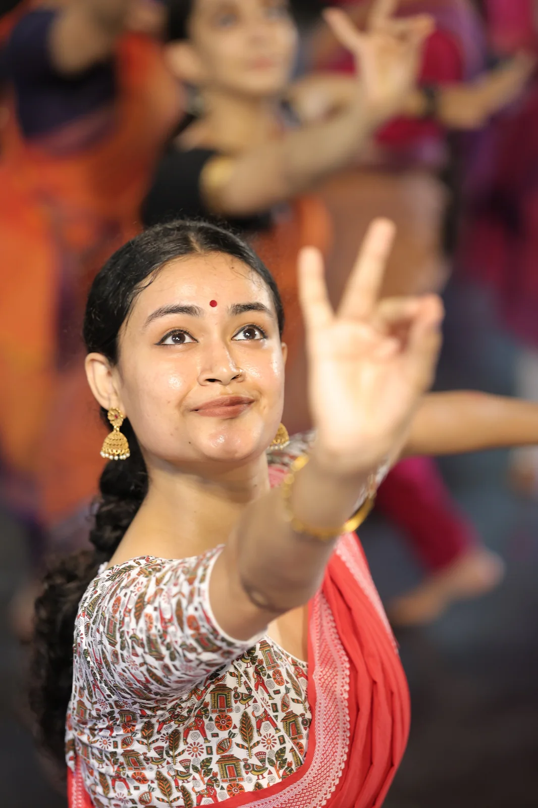
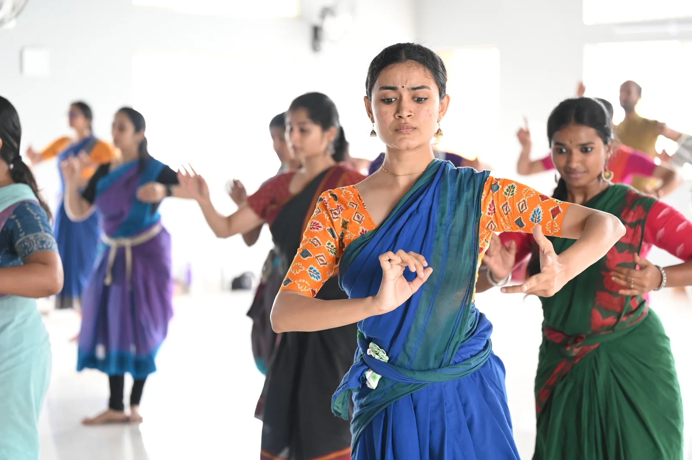
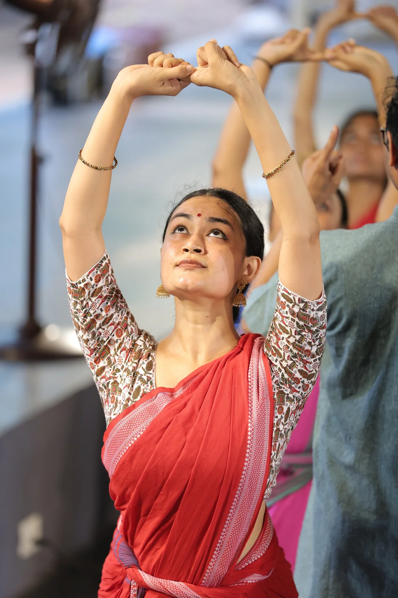

Post-Vidwath
Passed with distinction. Junior, Senior and Pre-Vidwath examinations also cleared with distinction.
 BHARATANATYAM
BHARATANATYAM03 / The journey
Gurus, practice, scholarship and the milestones along the way.


Guru-Śiṣya Paramparā
Twelve years of foundational dance training, beginning at age six.
Four years of advanced dance training in Mysuru.
Rāga, tāla, sāhitya and music for dance. Putra-śiṣya of Mahāmahopādhyāya Dr. R. Sathyanarayana.
Workshops & masterclasses

Recognition
Passed with distinction. Junior, Senior and Pre-Vidwath examinations also cleared with distinction.
Bharatanatyam artiste, Doordarshan Kendra, Bengaluru.
Karnataka Saṅgīta Nṛtya Academy.
Various prizes, Solo Classical Dance Competition, Suttur Jathra Mahotsava.
First Prize, Solo Bharatanatyam, Vidyuth, Vidyavardhaka College of Engineering, Mysuru.
Jury recognition for the interdisciplinary production Manas, Art Salad Global Art Competition.
Special Mention, 47th International Bharatanatyam Competition, Niranthara Kalemane.
Top Five Finalist, Rasovaisaha National Dance Festival, Udupi.
Education
Karnataka State Dr. Gangubai Hangal Music and Performing Arts University.
JSS Law College, Mysuru. Fifth rank in law.
PCMB at Indraprastha PU College, Uppinangady; SSLC at Indraprastha Vidyalaya, Uppinangady.